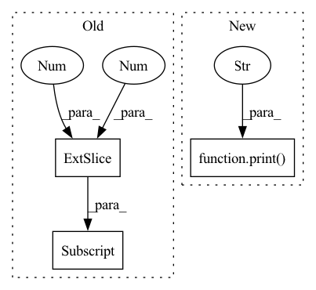

Pattern ID :33529
Before Change
if n == "weight_orig":
p.grad.mul_(module.weight_mask)
if n == "bias":
p.grad.mul_(module.weight_mask[:, 0, 0, 0] )
scaler.step(optimizer)
scaler.update()After Change
print(f"The current model has {(remaining_neurons / total_neurons) * 100} % of the original neurons")
if config.simplify:
print("Simplifying model" )
model = model.to("cpu")
propagate.propagate_bias(model, torch.zeros(1, 3, 224, 224), pinned_out)
remove_zeroed(model, torch.ones(1, 3, 224, 224), pinned_out)
model = model.to(device)In pattern: SUPERPATTERN
Frequency: 4
Non-data size: 3
Instances Fragment ID: 96559971
Project Name: eidoslab/simplify
Commit Name: e3cef5125238684e5bce46c85ed1ed762abd377e
Time: 2021-07-01
Author: carlo.alberto.barbano@outlook.com
File Name: training/train.py
M Class Name: AnonimousClass
N Class Name: AnonimousClass
M Method Name: main(1)
N Method Name: main(1)
M Parent Class:
N Parent Class:
M File Name: training/train.py
N File Name: training/train.py
M Start Line: 49
M End Line: 129
N Start Line: 49
N End Line: 147
Before Change
transformer.eval()
kors = [config["kor"]]
X = InferInputsBuilder(tokenizer, config["max_length"])(srcs=kors)
src_ids = X[:, 0, 0] .squeeze().tolist() // (1, 2, 2, L) -> (1, L) -> (L) -> list
pred_ids = transformer.predict(X).squeeze().tolist() // (1, L) -> (L) -> list
print([tokenizer.id_to_token(src_id) for src_id in src_ids])
print("->")After Change
src_ids = X[0, 0, 0].tolist() // (1, 2, 2, L) -> (L) -> list
pred_ids = transformer.predict(X).squeeze().tolist() // (1, L) -> (L) -> list
pred_ids = pred_ids[: pred_ids.index(tokenizer.eos_token_id)] // noqa
print( tokenizer.decode(ids=src_ids), "->" , tokenizer.decode(ids=pred_ids))
if __name__ == "__main__":
main() Fragment ID: 96559975
Project Name: eubinecto/dekorde
Commit Name: fec218b75568e8fe876d9015cb2cd186661303ef
Time: 2021-12-11
Author: eubinecto
File Name: main_infer.py
M Class Name: AnonimousClass
N Class Name: AnonimousClass
M Method Name: main(0)
N Method Name: main(0)
M Parent Class:
N Parent Class:
M File Name: main_infer.py
N File Name: main_infer.py
M Start Line: 13
M End Line: 26
N Start Line: 17
N End Line: 24
Before Change
imgs = imgs = [imread(f)[..., :3] / 255.0 for f in imgfiles]
imgs = np.stack(imgs, -1)
print("Loaded image data", imgs.shape, poses[:, -1, 0] )
def imread(img_file: str) -> np.ndarray:
After Change
imgs = [imread(file)[..., :3] / 255.0 for file in img_files]
imgs = np.stack(imgs, axis=-1)
print("Loaded camera poses, scene bounds, and image data." )
return imgs, poses, z_bounds
def imread(img_file: str) -> np.ndarray: Fragment ID: 96559976
Project Name: dvelopery0115/torch-nerf
Commit Name: df0e1937affe2f58167ca4c11796adda5764295d
Time: 2022-06-30
Author: dreamy1534@kaist.ac.kr
File Name: torch_nerf/src/utils/data/load_llff.py
M Class Name: AnonimousClass
N Class Name: AnonimousClass
M Method Name: _load_data(4)
N Method Name: _load_data(5)
M Parent Class:
N Parent Class:
M File Name: torch_nerf/src/utils/data/load_llff.py
N File Name: torch_nerf/src/utils/data/load_llff.py
M Start Line: 67
M End Line: 129
N Start Line: 68
N End Line: 140